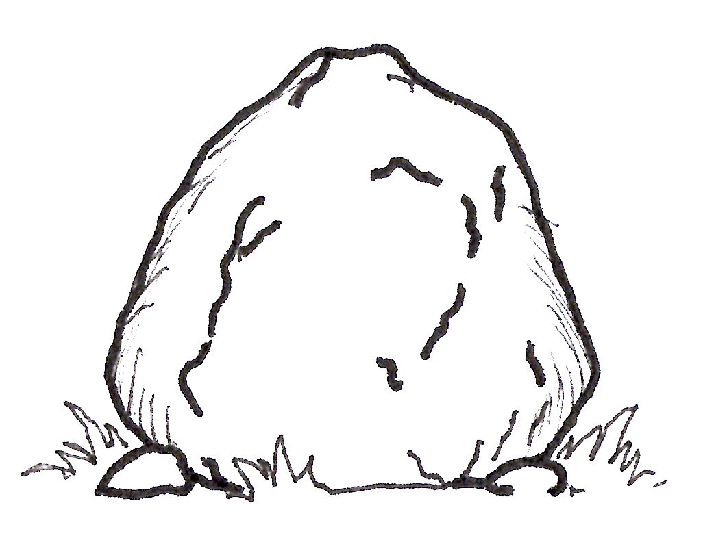
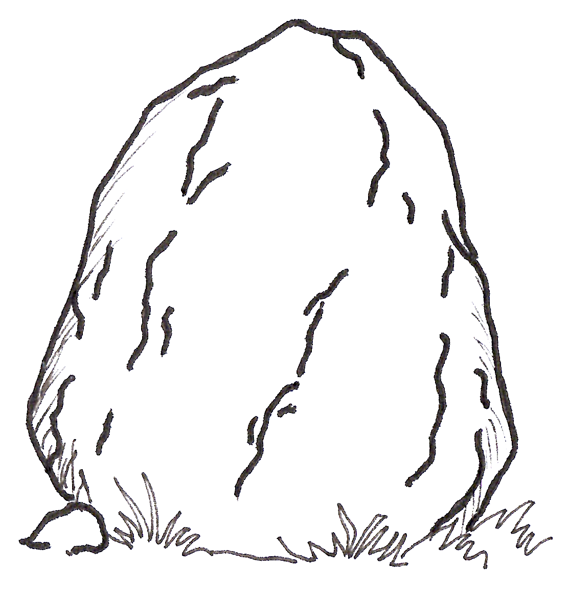
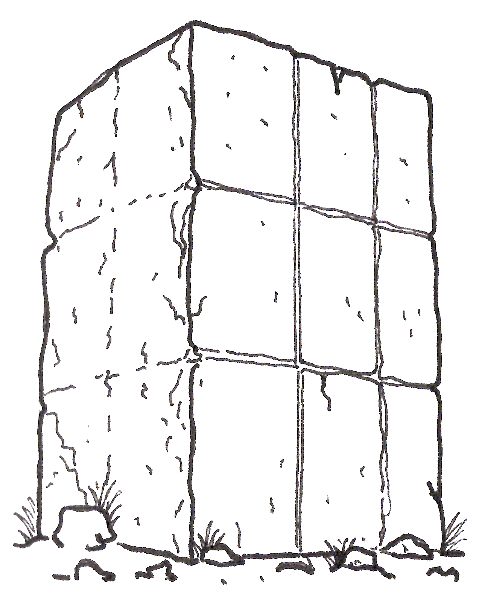
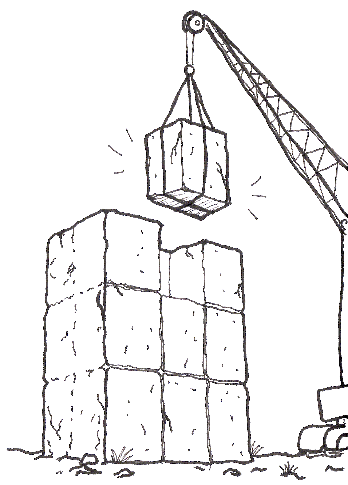
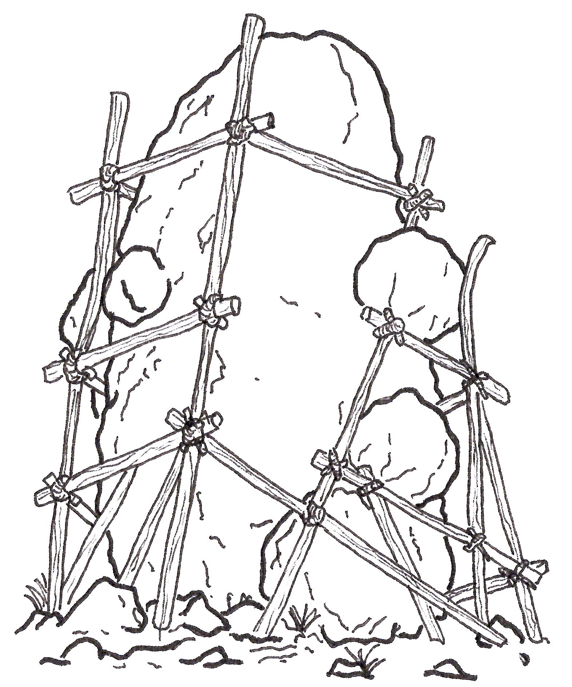

In Defense of the Monolith
We often curse at monolithic projects, and our first reflex is to try to break them into microservices.
Microservice? Good!
Monolith? Bad!
Because obviously, if one big problem is bad, 27 smaller problems spread across 27 repositories must be good.
But today, I’m going to defend the monolith.
Yes, I will.
Put those pitchforks down and blow out those torches. We have a limited fire budget, and Kubernetes isn't going to pay for itself.
But, of course, like any cute baby, small projects grow.
And if they don’t have some guidance along the way, they can become awkward teenage projects, dysfunctional adult projects, and eventually middle-aged, divorced, sedentary, underemployed, creepy projects that can barely get off the couch to answer the door for the pizza delivery guy. The pizza is cold, the delivery guy has left, and the project has introduced a new dependency injection framework to deal with the trauma.
Growing pains

To prevent this kind of unguided growth, software engineers have invented dozens of frameworks, patterns, designs, architectures and methodologies. Each promises to bring order to your codebase, usually by introducing 14 new directories and a 90-page PDF nobody will read.
And, to be fair, many of them work very well.
Until someone decides that this time they’re going to do things a little differently.
Just for this feature.
Because the director is breathing down their neck and wants it yesterday. The deadline is tomorrow, the requirements changed this morning, and somehow the architecture is the developer's fault.
Then another team decides that this structure isn’t quite right and that their structure would be better. Someone introduces a new pattern. Someone else copies a pattern from another project. A third person decides that both patterns are too complicated and invents a fourth one, which is basically the first one with a factory and a strong opinion.
Python is particularly susceptible to this. Its flexibility is one
of its greatest strengths: it gives you an enormous amount of freedom
to do things however you want5. Unfortunately, it also
means that when someone writes a function called
do_the_thing(), the language won't stop them from putting
it in a module called misc2_final_FINAL.py.

Five years and three completely new teams later, you have a project desperately trying to get off the couch to answer the pizza delivery guy. Nobody knows how the heating works, the remote is missing, and the only person who understands the database left for a company that uses Rust.
I’ve studied all these approaches and did the logical thing:
I created a new one that solves all the problems.6
Yes, I am aware of the irony. No, I will not be taking questions at this time.
I present to you: Chisel
A chisel is how you carve a monolith. A hammer is how you turn it into a very expensive pile of gravel. We prefer the former.
1. Preventing the monolithic mess

Chisel doesn't tell you how to structure your project. It doesn't care whether you use hexagonal architecture, clean architecture, onion architecture, or architecture inspired by the floor plan of your favourite IKEA.
That's for you to decide.
But most good designs have one thing in common: some kind of encapsulated unit of code. You might call it a service, a domain, a model, a component, a module, or a box with a very important name.
Whatever you call it, it should have a small, well-defined set of connections to the rest of the system. Think of it as a room with a door, rather than an open-plan mansion where every module can wander into every other module's bedroom.
Chisel calls the protected parts boundaries and the things deliberately exposed to the rest of the system interfaces. Other people may call them something else. Naming things is hard6 enough without starting a religious war.
Once you've established those boundaries and interfaces, you don't want them to slowly disappear. Architecture diagrams have a curious habit of remaining beautiful long after the code has moved to another continent.
So run Chisel's checks in CI.
If someone reaches across a boundary and grabs an internal implementation detail, the build fails. No committee meeting, no architecture summit, no interpretive dance around a whiteboard. Just a failing check.
The architecture becomes something the codebase enforces rather than something written in a document sitting somewhere and waiting to die.
2. Breaking a monolith apart
So your code grew.
Now you have hundreds of features, models, domains, heads, tentacles and sharp teeth. It has achieved sentience and demands for developer's blood.
But the CI checks kept the boundaries well defined and the interfaces centralised.

Now, when you eventually decide that one of those pieces really should become its own service, you have a much easier job.
The boundary is already there.
The interface is already defined.
Instead of performing an archaeological expedition through five years of undocumented dependencies, you implement the connections needed by the new service and move the code away.
That's what the chisel is for: not smashing the monolith into pieces, but carving along the lines you've already defined.
And if the extraction still takes six months, at least you know exactly which six months to blame.
3. Cleaning up your old mess
Maybe you're reading all this while sitting next to a monstrous monolith that is already struggling to breathe.

Maybe it was written by a previous team. Maybe that team was you. Maybe you were the previous team, but you've changed your name, grown a beard, and now deny everything.
That's fine too. Chisel isn't here to judge. It parses Python; it doesn't have a therapist's licence.
Draw a boundary around a feature, service, or module. Declare the small number of files, modules, or objects that the rest of the code is allowed to use as interfaces.
Chisel then shows you every place where the rest of the code reaches past those boundaries.
That list becomes your work plan. Or, if you're feeling less optimistic, your personalised list of regrets.
Instead of asking "What depends on this?" and spending three days searching through a codebase, you can ask Chisel.
It will show you where the leaks are. It won't fix them for you, because apparently we still have to do some of the work ourselves.
Fix the leaks, and you have something that can eventually be extracted. Or at least something you can look at without whispering "please don't break" before every deployment.
Static analysis, nothing more
Chisel is deliberately boring in one important respect: it doesn’t run your code.
Everything is static.
Python files are parsed using the standard-library
ast module. Nothing in your project is imported or
executed, and Chisel has no third-party dependencies.
No Docker containers. No mysterious plugins. No dependency tree that looks like a family reunion gone wrong. Just Python's AST and a healthy suspicion of runtime side effects.
The goal isn't to tell you that your monolith is bad.
Quite the opposite.
The goal is to make it possible to keep a monolith healthy as it grows — and, when the time comes, to carve pieces out of it without taking the whole thing down.
A monolith doesn't have to become a mess.
It doesn't need 27 services, 28 repositories, a dedicated platform team, and an annual architecture conference to discuss why the services are talking to each other.
Sometimes, it just needs a little structure.
You just need a chisel.
- As are pit traps, grenades and crocodiles.
- As are condolence messages, grenades and crocodiles.
- Citation needed.
- Until they don't.
- XKCD:
import antigravity. - XKCD: JavaScript frameworks.
- "There are only two hard things in Computer Science: cache invalidation and naming things" (Phil Karlton)